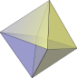
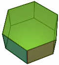
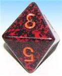
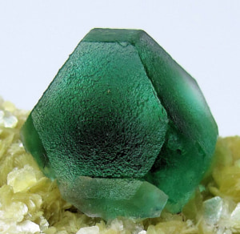

Octahedron
A 3D shape with 8 flat faces.
Octahedron Facts

Notice these interesting things:
- It has 8 faces
- It has 12 edges
- It has 6 vertices (corner points)
When it is regular:
- Each face is an Equilateral Triangle
- At each vertex 4 edges meet
- It is one of the Platonic Solids
Volume and Surface Area
For a regular octahedron (where all faces are equilateral triangles):
The name octahedron comes from the Greek octa- meaning 8, because it is a polyhedron with 8 faces. Like an octopus has 8 tentacles.
When we have more than one octahedron they are called octahedra
When we say octahedron we usually mean a regular octahedron (all faces are equal equilateral triangles), but it doesn't have to be.

This is also an octahedron, even though all faces are not the same. But it is better called a hexagonal prism.

8-Sided Dice? Yes! An octahedron that has 8 equal faces has an equal chance of landing on any face.
In fact, you can make fair dice out of all of the Platonic Solids.
| Make your own Octahedron, cut out the shape and glue it together. |
 |
Here is a beautiful fluorite crystal. It naturally forms an octahedron, but this one is a "truncated" (tips chopped off) octahedron:

Courtesy Wikimedia user CarlesMillan